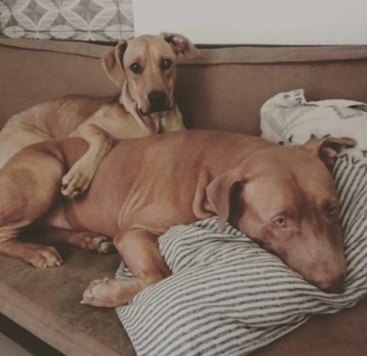
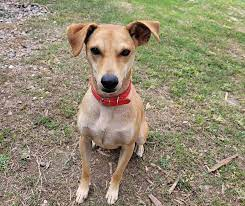
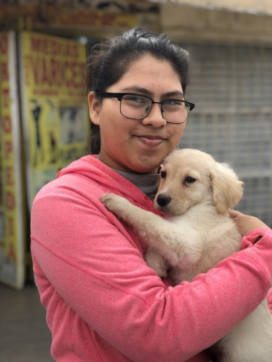

Testimonios
En el Perú existen millones de perros abandonados en las calles. Ellos pasan sus días buscando comida, seguridad, compañía, pero sobre todo cariño.
Aquí te contamos la historia de dos personas que cambiaron la vida de una mascota dándole un hogar, pero lo que no sabían, era que en el camino también iba a cambiar la suya.
Historia de Canela y Azúcar
Estas dos perritas no son las primeras que ha rescatado Almendra y seguro que tampoco serán las últimas. En su casa ya saben que en cualquier momento podría llegar con un nuevo perro o gato bajo el brazo, así que están preparados. Para su buena suerte, cada uno de los miembros de su familia (que son muchos) están enamorados de los animales y la apoyan en el proceso de encontrarles adoptantes y hacerlos sentir queridos.
“Se podría decir que mi casa es un temporal. Hemos rescatado más de quince mascotas en estos últimos años”, dice.
Pero sin duda los momentos que pasó junto a Canela y Azúcar han sido los más difíciles que ha tenido que atravesar en este camino. “Mi novio encontró a Canela comiendo de la basura en la esquina de nuestra casa. A Azúcar la encontré en una zona que los vecinos agarraron de punto para abandonar animalitos enfermos. Pensamos que la dejaron ahí porque ya iba a parir”, cuenta.
A las dos les encontró adoptante en su momento porque tenían otras mascotas de las que debían hacerse cargo, pero Canela se enfermó de distemper y a Azúcar le encontraron un tumor venéreo (TVT), así que tuvieron que costear los gastos de sus tratamientos y en el camino se encariñaron y ahora no las quieren dejar. Lamentablemente, por un tema de espacio y dinero, siguen buscando a alguien que le dé un hogar a Azúcar.
“Las dos son el más claro ejemplo del abandono y la tenencia irresponsable. El distemper es lo primero que puede contraer un cachorro en la calle y casi siempre es mortal. Con vacunar y esterilizar a tu mascota le estás ahorrando miles de complicaciones”, menciona.
Historia de Rocky
Rocky fue rescatado de la calle y estaba en muy mal estado físico y emocional. Nuestro equipo de etología trabajó arduamente con Rocky para ayudarlo a superar sus miedos y traumas pasados. Fue un proceso lento pero gratificante, ya que vimos cómo poco a poco comenzaba a confiar en las personas nuevamente.
Durante su estancia en la guardería canina, nos dimos cuenta de que Rocky era extremadamente juguetón y activo. Decidimos publicar su historia y fotos en nuestras redes y pagina web, con la esperanza de encontrarle una familia amorosa que pudiera satisfacer sus necesidades energéticas.
Afortunadamente, una pareja se enamoró instantáneamente del adorable rostro de Rocky. Después de leer su historia detallada en nuestra plataforma digital y conocer sobre los servicios adicionales como asesoramiento personalizado ofrecido por nuestros expertos etólogos, decidieron darle una oportunidad al dulce perro rescatado.
Organizamos una reunión entre ellos y nuestro equipo para garantizar que fuera el hogar adecuado para Rocky. La conexión fue instantánea e indescriptible; todos sabíamos que era el ajuste perfecto.
Hoy podemos decir con orgullo que Rocky ha sido adoptado oficialmente por esa maravillosa pareja. Recibimos actualizaciones frecuentes sobre cómo está disfrutando su nueva vida: largas caminatas por el parque, sesiones diarias de juego interactivo e incluso ha comenzado a asistir a clases de obediencia.
Este caso nos recuerda por qué amamos lo que hacemos. No solo pudimos brindar cuidado y rehabilitación a un perro en necesidad, sino que también logramos encontrarle el hogar amoroso y dedicado que merecía. Creemos firmemente en dar una segunda oportunidad a los animales rescatados y trabajar con nuestros clientes para asegurarnos de que encuentren la mascota perfecta para ellos.
Historia de Max
Max había sido rescatado de un entorno donde había sufrido maltrato y abandono. Cuando llegó a nosotros, estaba extremadamente asustado y desconfiado hacia los humanos.
Desde el primer día, me propuse establecer una conexión basada en la paciencia, el amor y el respeto hacia Max. Pasamos muchas horas juntos, caminando lentamente por el parque para que se sintiera seguro y permitiéndole acercarse a mí a su propio ritmo. Durante ese tiempo, también trabajé con técnicas de refuerzo positivo para fomentar comportamientos deseables en él.
Fue una tarea ardua pero gratificante ver cómo poco a poco Max comenzaba a confiar en mí y mostraba signos de felicidad. Recuerdo especialmente un momento crucial en nuestro proceso de rehabilitación: después de varias semanas juntos, Max se acercó corriendo hacia mí con la cola agitándose frenéticamente, demostrando claramente que me consideraba su amigo.
A partir de ese punto, su progreso fue notable. Participamos juntos en sesiones grupales donde interactuó con otros perros sin miedo ni agresividad. Cuando finalmente encontramos una familia responsable dispuesta a adoptarlo, fue realmente emocionante presenciar cómo Max dejaba atrás sus traumas pasados y comenzaba una nueva vida llena de amor y cuidados.
Esta historia siempre ocupará un lugar especial en mi corazón porque me enseñó la importancia de la perseverancia, el amor incondicional y la capacidad de rehabilitación de los perros. Cada vez que recuerdo a Max, me motiva a seguir trabajando en mi labor para ayudar a otros perros rescatados a encontrar su propia felicidad y bienestar.

Historia de Max
Ángela sufre de depresión y su psiquiatra le recomendó adoptar una mascota como terapia. Ella no se arrepiente de haber seguido su recomendación al pie de la letra.
Encontró a Max en una página de internet, él fue uno de los cinco bebés que dio a luz una perrita que quedó preñada después de escaparse de su casa por solo quince minutos.
“Yo le diría a toda la gente que adopte porque ellos son unos seres muy fieles y te sacan una sonrisa cuando más lo necesitas, adoptar es una de las mejores cosas que les va a poder pasar en la vida”, dice.
